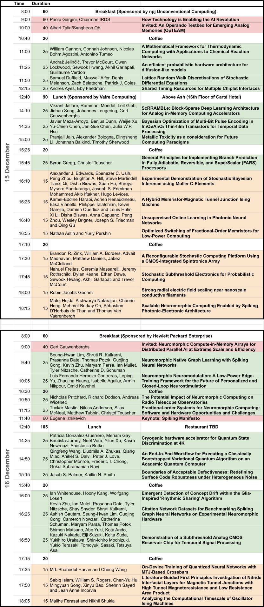

Topics of Interest
Future Computing Paradigms
- Neuromorphic (brain-inspired), approximate/probabilistic, and analog computing; hybrids of these approaches
- Energy-efficient computing including reversible, adiabatic, ballistic, and cryogenic computing
- Quantum and optical computing
- Biological and biochemical computing
- Non–von Neumann architectures (e.g., in-memory processing, memory-based computing, CAM, cellular automata, neural networks)
Future Design Aspects
- Extending Moore’s law; error-tolerant logic and circuits
- Post-CMOS or memory-centric computing
- 3D/2.5D and novel heterogeneous integration/packaging
- Future circuit scaling with high reliability and/or flexibility
- Cybersecurity in future computing systems
Future Software & Applications
- Beyond von Neumann software design (OS, compilers, security, resource management)
- Future programming paradigms and languages
- Applications driving next-generation hardware (e.g., ML, deep learning, LLMs)
Program
Keynote: Spiking Manifesto - Eugene Izhikevich
Practically everything computers do is better, faster, and more power-efficient than the brain. For example, a calculator crunches numbers more energy-efficiently than any human. Yet AI models are a thousand times less efficient than the brain. These models use artificial neural networks (ANNs) requiring GPUs for multiplication of huge matrices. In contrast, spiking neural networks (SNNs) of the brain have no matrix multiplication and much smaller energy requirements.
In this manifesto I propose a framework for thinking about popular AI models in terms of spiking networks and polychronization, and for interpreting spiking activity as nature's way of implementing look-up tables. This offers a way to convert AI models into a novel type of architecture with the promise of a thousandfold improvement in efficiency.
Bio:
- Founder and CEO of SpikeCore, San Diego, CA
- Founder and Chairman of the Board of Brain Corp, San Diego, CA
- Founder and Editor-in-Chief of Scholarpedia - the peer-reviewed encyclopedia
- Author of 2 textbooks, 200 patents and peer-reviewed publications

Submission & Publication
Full Papers Journal-Reviewed
Submit directly to npj Unconventional Computing (collection title "Future Computing: Paradigms, Technologies, Software and Applications"). Indicate interest in presenting at ICRC 2025. Accepted papers are subject to the journal’s standard APC unless waived.
ICRC Program Inclusion is determined from the first round of journal review:
- Accept: Published in the journal; presented at ICRC.
- Revise: Continue journal review; presented at ICRC.
- Transfer: Considered by another Springer Nature journal (e.g., Scientific Reports); presented at ICRC.
- Reject: Not included in ICRC program.
Abstract‑Only Submissions 1 page max
Submit via EasyChair. Present an idea, position, or results relevant to the topics of interest. Original research is not required.
- If accepted: featured as short talks
- Not included in any published proceedings or journals
- Page limit includes references and all supporting material
Special Session Proposals 2 pages
Submit via EasyChair. Sessions may include workshops, tutorials, panels, or demonstrations on any topic above. Original research is not required. Sessions last 1–2 hours (include a rough time budget). Submissions will not be included in conference proceedings. Page limit includes references and supporting material.
Important Dates
| Paper submissions due | 6 October 2025 (Anywhere on Earth) — No extensions |
|---|---|
| Rolling review | Earlier submissions may receive earlier notifications |
| Author notification (ICRC program) | 7 November 2025 |
| Early registration deadline (presenters required) | 16 November 2025 |
| Hotel reservation deadline | 16 November 2025 |
| Conference | 15–16 December 2025 |
Registration
- Early Registration until 16 November 2025 -- $300
- Regular Registration after 16 November 2025 -- $450
Venue and Travel
- All technical sessions and both breakfasts will be held on the 4th Floor in Amici.
- To book your hotel room within the ICRC 2025 room block, please use this link.
- The booking includes a $30 destination fee per night, which has been waived for the ICRC room block. It will not be charged when making the reservation. The hotel front desk will waive this fee during the time of check-in.
- The room rate for ICRC at the Carté Hotel is supposed to be $199. If you cannot get this rate at the hotel, please contact Ghazaleh.Ng@hhmhotels.com .
Sponsorship
All sponsor levels & benefits are below:
Organizing Committee
- Joseph S. Friedman, University of Texas at Dallas
- Christopher H. Bennett, Sandia Labs
- Alexandru Paler, Aalto University
- Damien Querlioz, CNRS, Université Paris-Saclay
- Christof Teuscher, Portland State University
- Akinaga Hiro, Hokkaido University
- Catherine Schuman, University of Tennessee
- Jean Anne Incorvia, University of Texas at Austin
- Pedram Khalili, Northwestern University
- Alvaro Velasquez, University of Colorado Boulder